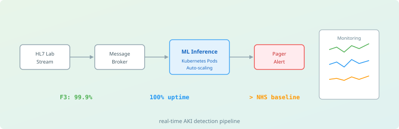

Kubernetes-based real-time acute kidney injury detection from live HL7 laboratory streams with pager alerts and fault-tolerant inference.
A production-grade ML system capable of processing streaming hospital lab results, running inference in real time, and dispatching clinical pager alerts when AKI risk is detected.
Built as a fully fault-tolerant system and validated with chaos-engineering-style failure injection — network partitions, pod evictions, node failures, database restarts, and message backlogs. Sustained 100% uptime over a two-week evaluation and exceeded the NHS baseline for AKI detection with an F3-score of 99.9%.